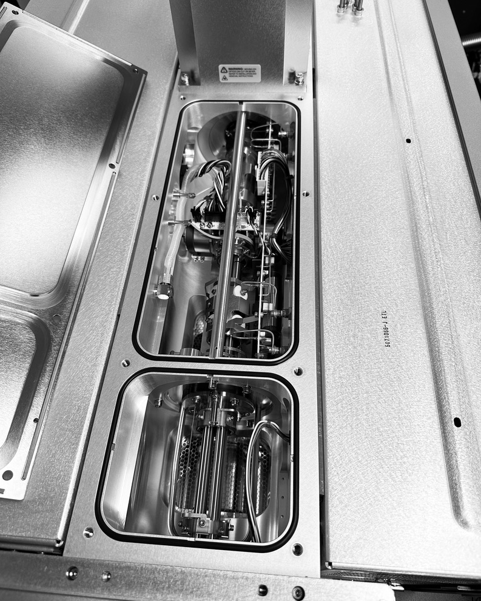
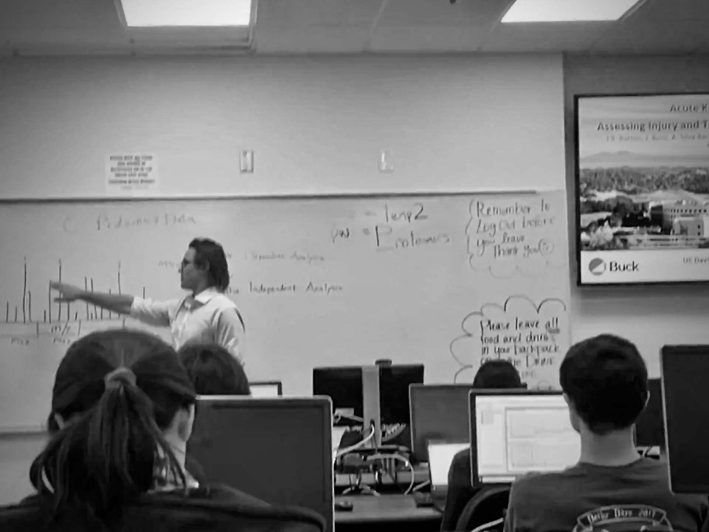
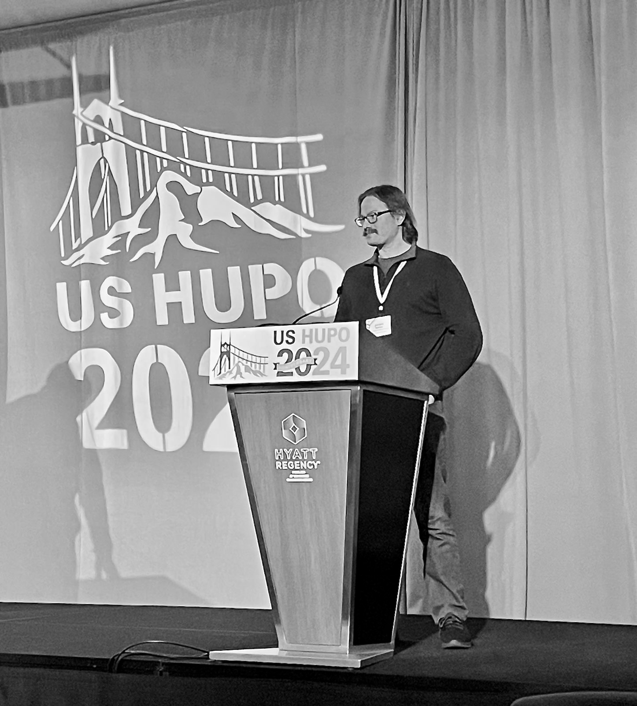

Strategic guidance for biotech founders and investors. Bridging innovation, capital, and clinical expertise in longevity and life sciences.



Meet the advisor bridging science and investment. I have deep biotech knowledge with proven venture experience to guide your company from discovery to funding.
Led technical due diligence and deal execution across 20+ longevity and biotech investments from pre-seed through Series A with $25+ M deployed. Portfolio companies have secured partnerships with top-10 pharma and raised follow-on funding from tier-1 VCs.
PhD in Analytical Chemistry from Wayne State University, followed by postdoctoral research at the Buck Institute for Research on Aging. Published 20+ peer-reviewed papers in aging biology and therapeutic development. Deep expertise in proteomics, drug target identification, and translational science.
Actively investing as Associate at Lifespan Vision Ventures, evaluating 100+ deals annually in genetic medicine, longevity therapeutics, and platform technologies.
Specialized focus on aging biology interventions, genetic medicine platforms (CRISPR, gene therapy, oligonucleotides), and age-related disease therapeutics. Technical depth across modalities from small molecules to cell therapies, with particular expertise in pre-clinical to Phase II evaluation.
I'm Jordan B. Burton, a scientist-turned-investor who believes the best longevity breakthroughs need more than just good science. These breakthroughs need strategic positioning, clear milestones, and compelling narratives that resonate with investors.
My journey started in the lab. With a PhD in Analytical Chemistry from Wayne State University and postdoctoral research at the Buck Institute for Research on Aging, I spent years uncovering the molecular mechanisms of aging and identifying therapeutic targets. I've published over 20 peer-reviewed papers and collaborated with leading researchers worldwide.
Over time, I realized that breakthrough science often dies in academia, not for lack of merit, but for lack of translation. This drove me to venture capital, where I now serve as an Associate at Lifespan Vision Ventures, deploying capital into the most promising longevity and genetic medicine companies.
Having evaluated over 100 deals annually and led investments in over 20 companies, I've seen patterns in what makes life sciences companies fundable. Too often, brilliant scientists struggle to translate their work into investor-ready narratives. Technical excellence gets lost in poor positioning. Critical milestones are misaligned with funding needs.
I founded Lifespan Consulting to help exceptional founders bridge this gap. My advisory work is selective and strategic, I work with founders who are building something meaningful in longevity medicines, helping them navigate from scientific validation to successful funding.
Scientific First, Strategic Always
I start with the science. Is it sound? Is it differentiated? Can it scale? Only then do we build the business narrative. This scientific rigor, combined with active investment experience, helps founders avoid common pitfalls and focus on what truly drives value.
Current Market Intelligence
As an active investor, I'm constantly evaluating deals, talking to VCs, and tracking market trends. This means my advice is based on what's actually getting funded right now.
Selective Engagement
I maintain a limited advisory practice alongside my investing role, typically working with 3-5 clients at a time. This ensures deep engagement and meaningful impact for each founder I work with.
Investment Experience
Scientific Credentials
Domain Focus
I'm based in the San Francisco Bay Area but maintain strong ties to the emerging Detroit biotech ecosystem. I believe the next wave of innovation won't just come from the coasts.
When I'm not evaluating pitch decks or diving into clinical data, you'll find me at longevity conferences, contributing to scientific discussions on aging biology, or exploring how to accelerate biotech innovation.
My goal is to help the most promising longevity medicine companies navigate this journey successfully. Whether through advisory work today or potentially through my own fund tomorrow, I'm committed to accelerating the therapies that will define the future of human health.
If you're building something meaningful in longevity or genetic medicine and need strategic guidance from someone who understands both the science and the venture landscape, I'd love to hear from you.
Reach out for strategic biotech support.
For project inquiries or partnership opportunities.
info@lifespan-consulting.com